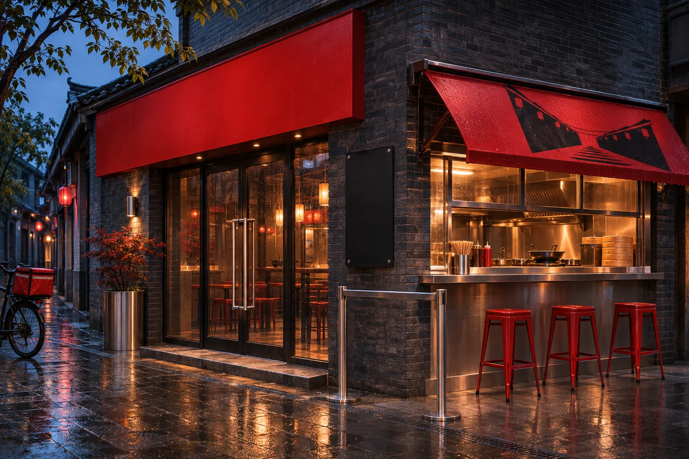
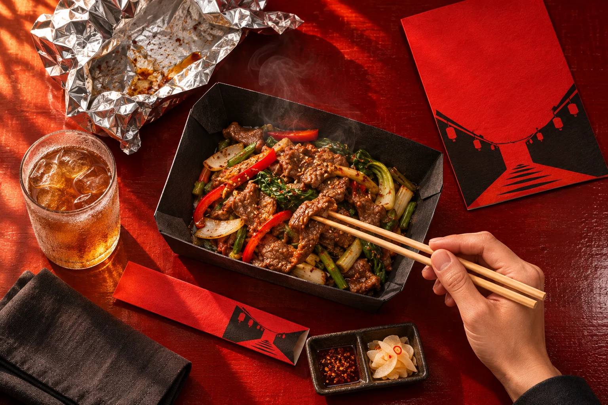
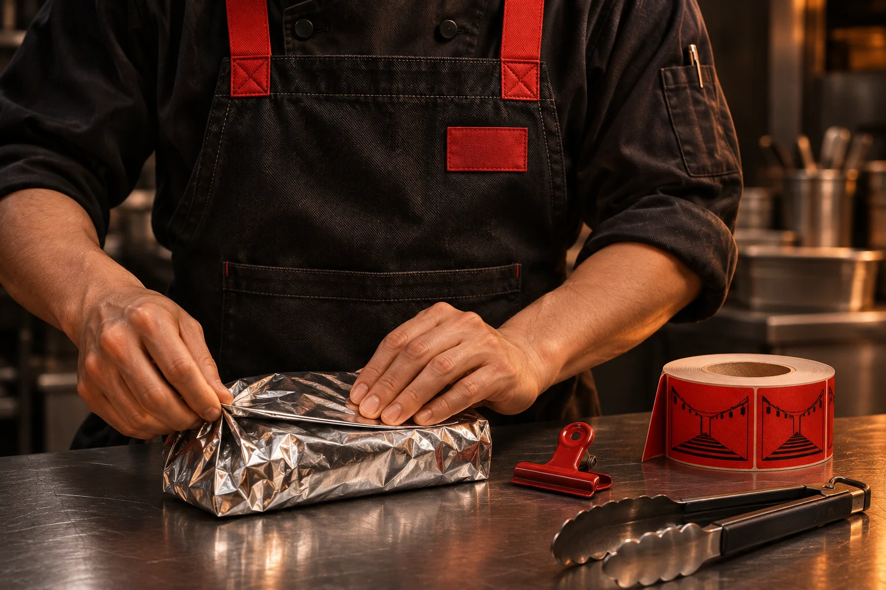
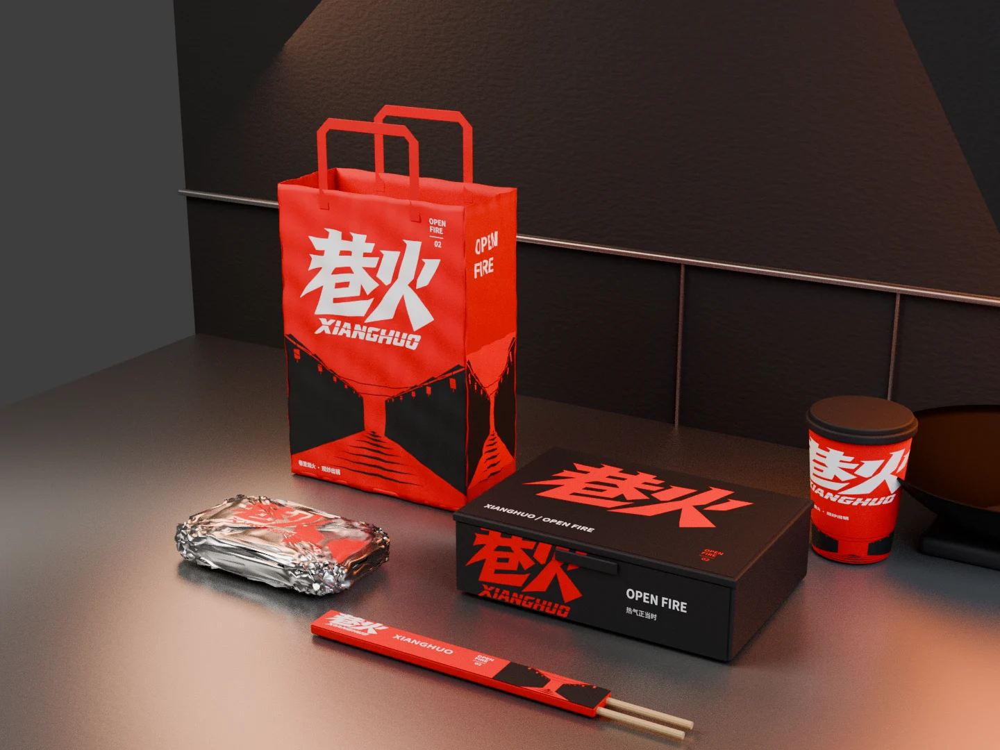

Brand identity / 2026 / VIS
巷火
XIANGHUO / OPEN FIRE
从街角，到餐桌。
沿用红黑色彩与有力量的字标，让街景、用餐和打包形成不同叙事。视觉不止贴在包装表面，也进入真实使用关系的概念表达。



纸张、折面与烟火气。

制作说明 / 本项目为品牌视觉探索与应用提案。AI 生成场景与 Blender 渲染已分别标注；图片中的小字、材料性能及生产工艺尚待打样验证。这里展示的是当前阶段方案，而非商业落地声明。